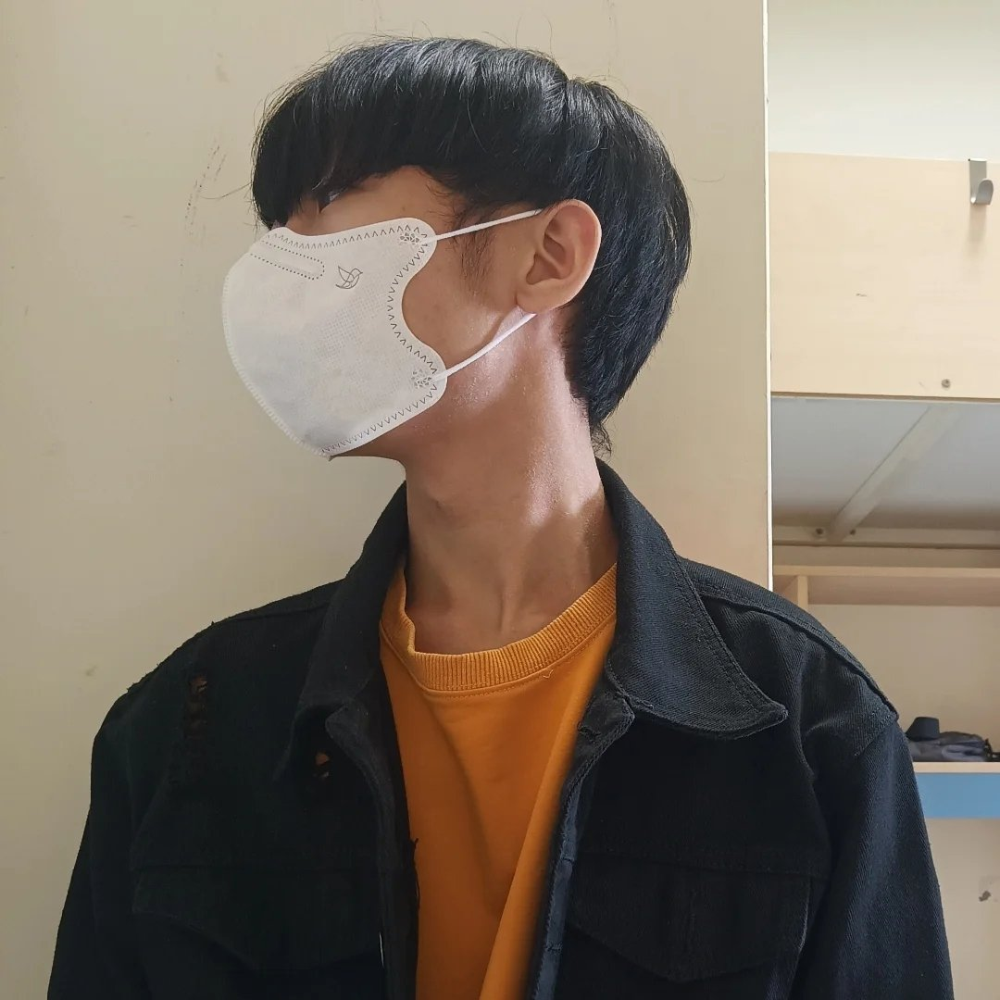

目前就讀資管系二年級，熱衷於數據分析與系統架構開發。
結果為 S (社會型) 與 E (企業型)。我擅長在複雜的人際與商務環境中，運用邏輯思維拆解問題，並以技術性的穩定執行力達成團隊目標。
專注於資料結構優化、安全權限控管以及系統維運備份，確保企業核心資料完整。
● 大目標： 學術卓越與技術精湛。
● 小目標： 完成資料庫系統和 SAP 高階課程、提升演講技巧與公眾演說自信。
● 大目標： 職業融入與職業起步。
● 小目標： 取得資料庫管理或系統分析實習、取得相關產業認證。
● 大目標： 從員工邁向主管。
● 小目標： 練習溝通協調與跨部門衝突處理、學會向非技術人員解釋技術限制。